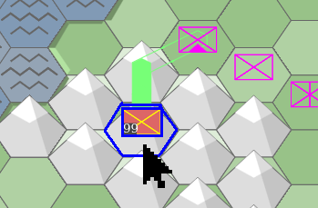
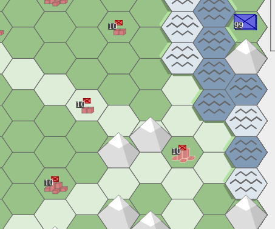
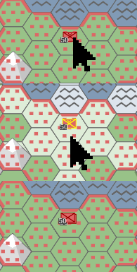
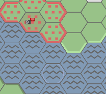

KAMPANIA
TUTORIAL
Generator rozgrywek
Nowa gra
Ilość hexów na boku: 15
Ilość lądu: 50%
Ilość gór na lądzie: 10%
Ilość miast: 24
Stawianie oddziałów
Wybierz jednostkę do rozmieszczenia:
Wielkość oddziału:
50
Wszystkim po równo
CZERWONI
Batalion piechoty
(1 mieszkaniec - 5 saperów, minimum 10 mieszkańców)
CZERWONI
Czerwoni
Podatek: 23% (SunOfPeru approves)
Rozmiar: 50
Inwestycje:
Wielkość:
50
HISTORIA
Tutorial
Cel: Przenieś jednostki w docelowe miejsca (purpurowe kontury)
Wskazówki:
1.
Aby zaznaczyć oddział, kliknij na niego. Należy kliknąć na prostokąt, który zakrywa obszar oddziału o wielkości 99.
2.

Aby odznaczyć oddział, kliknij na dolną część sześciokąta, na którym jest oddział, dowolny niepodświetlony sześciokąt lub obszar planszy bez sześciokątów.
3.

Po zaznaczeniu oddziału podświetlą się sześciokąty, na które możesz zaprowadzić drogę, którą poruszy się oddział.
W panelu sterowania pojawi się nowa strona, którą na razie można zignorować.
4.

Po zaprowadzeniu drogi możesz ją przedłużyć w dowolnym kierunku.
5.
Aby zakończyć prowadzenie drogi można:
-kilkąć 2-krotnie na miejsce docelowe
-kilkąć w dowolne niepodświetlone miejsce na planszy (niezależnie, czy to sześciokąt, czy jasnoszary obszar poza planszą)
6.

Aby usunąć drogę, należy zaznaczyć oddział i kliknąć na obszar sześciokąta, na którym jest dany oddział, nie przykryty przez oddział, gdyby miał wielkośc 99.
Intuicyjnie jego dolną część.
7.
Aby zakończyć turę i ruszyć oddziały, należy odznaczyć oddział i kliknąć na przycisk "ZAKOŃCZ TURĘ".
Oddziały lekkie mogą podczas jednej tury poruszać się po lądzie o liczbę pól odpowiednią do swojej szybkości, a przy wchodzeniu na górę o 1 pole.
Oddziały górskie mogą podczas jednej tury poruszać się zarówno po lądzie i po górach o liczbę pól odpowiednią do swojej szybkości (jedynie 2).
Oddziały:
Piechota

| Szybkość | 2 |
| Rodzaj | lekki |
Piechota zmotoryzowana

| Szybkość | 5 |
| Rodzaj | lekki |
Piechota górska

| Szybkość | 2 |
| Rodzaj | górski |
Cel: Przenieś jednostki w docelowe miejsca (purpurowe kontury)
Wskazówki:
1.
Na stosie na sześciokącie (8,4) są 4 oddziały: 3 oddziały czołgów i 1 oddział piechoty na samym spodzie.
Zaznacz oddział na wierzchu stosu, klikając na niego i tasuj oddziały, klikając ponownie na nie, aż oddział piechoty będzie na wierzchu.
W panelu sterowania można zobaczyć kolejność oddziałów na stosie pod zaznaczonym oddziałem.

2.

Wejdź oddziałem piechoty na górę na północno-zachodni (lub południowo-zachodni) sześciokąt.
Zakończ turę.
3.
Podziel ów oddział piechoty.
Można to zrobić na 2 sposoby:
-zaznacz oddział piechoty i kliknij na niego jeszcze raz. Wtedy z oddziału wydzielony zostanie oddział o wielkości 10 i przeniesiony na spód stosu.
UWAGA! Działa to jedynie na oddziałach, które są jedyne na ich sześciokącie.
-po zaznaczeniu oddziału, w panelu sterowania widoczny jest panel dzielenia/rozbudowy oddziału.
na pasku, w tym panelu można zaznaczyć liczebność oddziałów, które powstaną ze starego oddziału po podzieleniu. Aby podzielić oddział w dokładny sposób, należy klinkąć przycisk "PODZIEL"
-alternatywnie, w panelu dzielenia można klinkąc przycisk "ZOSTAW 10", przez co z oddziału wydzielony zostanie oddział o liczebności 10
UWAGA!!!
Dzielenie oddziałów nie działa, gdy na sześciokącie, gdzie znajduje się dany oddział są 4 oddziały (maksymalna liczba).
4.

Poprowadź podzielone oddziały na docelowe miejsca. Pamiętaj, że oddziały na jednym sześciokącie można "tasować".
Zakończ turę.
5.

Na sześciokącie (8,1) znajduje się stos odzdziałów czołgów. Powinien przejść na pole (10,3), ale jest blokowany przez 3 stosy oddziałów artylerii, ponieważ na jednym sześciokącie nie może być więcej, niż 4 oddziały .

Aby połączyć oddziały, należy zaznaczyć oddział na szczycie stosu i z panelu sterowania wybrać oddział z tego samego stosu, z którym zaznaczony oddział ma zostać połączony. Oddziały na stosie, które mogą być połączone z zaznaczonym oddziałem mają niebieski kwadrat po prawej stronie.
UWAGA!!! Można łączyć jedynie oddziały tego samego rodzaju.
Po "udrożnieniu" drogi oddział czołgów może przejechać w docelowe miejsce.
6.
Oddziały można łączyć też w inny sposób. Dotyczy to oddziałów tego samego typu, ale na różnych heksach, oddalonych od siebie o zasięg oddziału plus jeden.
Mależy zaznaczyć jeden oddział obrony przeciwlotniczej. Ponieważ oddział ten znajduje się obok drugiego oddziału obrony przeciwlotniczej, ten drugi oddział będzie miał kontury podświetlone na niebiesko. Oznacza to, że można na niego kliknąć, by zaplanować akcję połączenia.
Jeśli oddział nie stoi zaraz obok drugiego oddziału, należy poprowadzić drogę zaraz pod oddział i wtedy będzie można zaplanować połączenie oddziałów.
UWAGA!Jeśli suma wielkości łączonych oddziałów będzie większa, niż 99, wtedy część oddziału nie zostanie połączona i zostanie na swoim miejscu, a drugi oddział będzie miał wielkośc 99.
Po zaplanowaniu łączenia oddziałów, można zakończyć turę.
Są to oddziały ciężkie, więc nie mogą poruszać się po górach oraz nie mogą samodzielnie poruszać się po wodzie. Oddziały lekkie mogą podczas jednej tury poruszać się jedynie po lądzie o liczbę pól odpowiednią do swojej szybkości.
Oddziały:
Czołgi

| Szybkość | 3 |
| Rodzaj | ciężki |
Artyleria
| Szybkość | 1 |
| Rodzaj | ciężki |
Obrona przeciwlotnicza
| Szybkość | 1 |
| Rodzaj | ciężki |
Cel: Przenieś jednostki w docelowe miejsca (purpurowe kontury)
Wskazówki:
1.
Oddział piechoty na sześciokącie (3,9) musi dotrzeć na sześciokąt (1,0), który jest na wyspie, a jak wiadomo oddział lądowy nie może samodzielnie przejść na wyspę.
Można jednak poprowadzić ścieżkę przez wodę.

2.
Jednak aby oddział lądowy można było przenieść, należy doprowadzić oddział łodzi desantowych do pierwszego wodnego sześciokąta, który jest na wyznaczonej drodze (miejsce załadunku oddziału).

Można teraz zakończyć turę.
UWAGA!!! Kolejność zaznaczania oddziałów będzie miała wpływ na kolejność ruchów podczas fazy przemieszczania się. Oddziały zaznaczone później wykonają ruch później. Dlatego warto najpierw zaplanować drogę tratwy, a potem dopiero drogę desantowanego oddziału.
3.
Ponieważ wielkość oddziału łodzi desantowych jest mniejsza, niż oddział desantowany, oddział ten będzie podzielony i jedynie część niego będzie transportowana.
Aby przenieść cały oddział na miejsce docelowe, oddział łodzi desantowych będzie musiał wrócić po wyładowaniu piechoty.
4.
Poruszanie się oddziałów wodnych po wodzie jest trywialne. Nie mogą one poruszać się po niezamieszkałym lądzie.
Są to oddziały wodne, więc nie mogą poruszać się po niezamieszkałym lądzie lub górach.
Oddział łodzi desantowych nie może atakować i służy do transportowania wszystkich oddziałów lądowych przez morze.
Oddziały:
Lekkie okręty

| Szybkość | 3 |
| Rodzaj | wodny |
Pancerniki
| Szybkość | 3 |
| Rodzaj | wodny |
Łodzie desantowe

| Szybkość | 3 |
| Rodzaj | wodny/transportowy |
Cel: Zajmij wszystkie miasta
Wskazówki:
1.
Zajmij jedno miasto. Przesuń jedyny twój oddział na którekolwiek z miast.
Zakończ turę.
Aby efektywnie zająć miasto potrzeba oddział o wielkości 10 dowolnego nie-lotniczego rodzaju. Jeśli suma oddziałów na sześciokącie będzie mniejsza, niż 10, wtedy miasto zbierze mniej pieniędzy na turę.
2.

Aby zaznaczyć zdobyte miasto, należy kliknąć na dolną część sześciokąta z miastem. Miasto (a nie oddział) będzie zaznaczone po kliknięciu, jeśli to sześciokąt z miastem będzie podświetlony, a nie oddział na nim.
3.
Po kliknięciu wyświetli się panel sterowania.
Najważniejszym zadaniem jest wybudowanie nowego oddziału.
W panelu sterowania jest tablica możliwych do wybudowania oddziałów. W danej grze nie można wybudować wyszarzonych oddziałów. Suwakiem "Rozmiar" można zmienić wielkość oddziału. Aby zaplanować budowę oddziału należy kliknąć na odpowiedni oddział na panelu.
Po zaplanowaniu, na sześciokącie pojawią się puste oddziały z jasnoniebieską obwódką. Obwódka ta oznacza o ile docelowo oddział ma urosnąć.
4.
Aby usunąc planowanie, gdy oddział ma wielkość 0, należy zaznaczyć ten oddział i w panelu sterowania kliknąć przycisk "ZAPRZESTAJ ROZBUDOWY".
5.
Zakończ turę. Dalsze zajmowanie miast przez ląd powinno być proste.
6.
Oddziały morskie mogą też stacjonować w miastach. Oczywiście doprowadza to do takiego kuriozum, że statki mogą poruszać się ciągiem miast w głąb lądu, ale to nie błąd, tylko funkcjonalność.
7.
Jeśli na sześciokącie przy morzu jest zarówno oddział lądowy i łodzie desantowe, można poprowadzić oddział przez wodę bez stawiania łodzi desantowych na morzu. Oddział łodzi desantowych nie może być jednak wtedy rozbudowywany.
Gdy kończy się tura drużyny, wtedy oddziały są rozbudowywane za pomocą pieniędzy zgromadzonych w danym mieście.
Najpierw rozbudowywane są oddziały najwyżej na stosie, jesli któryś oddział będzie rozbudowany do końca, wtedy rozbudowywany jest kolejny oddział niżej na stosie.
W panelu sterowania miasta przy produkcji widoczne są ceny oddziałów. Jest to cena za rozbudowę danego oddziału o wielkość 1, np. oddział piechoty o wielkości 99 kosztuje 792$.
Liczbę pieniędzy dla danego miasta dostępną w danej turze można zobaczyć w górnej części panelu sterowania.
W tej lekcji mowa jest głównie o tworzeniu oddziałów, nie wymagających stali/produkcji.
Poniżej pokazane są ceny tych oddziałów (nie licząc wojsk saperskich).
Oddziały:
Piechota
| Cena | 8$ |
Piechota górska
| Cena | 10$ |
Lekkie okręty
| Cena | 12$ |
Łodzie desantowe
| Cena | 4$ |
Cel: Przenieś jednostki w docelowe miejsca (purpurowe kontury) i zniszcz wszystkie oddziały nieprzyjaciela
Wskazówki:
1.
W tej lekcji pojawiły się oddziały przeciwnika. Jedyną akcją, który on robi jest zakończenie tury, więc można na nim testować bez obawy, że straci się oddziały.
2.
Oddziały przeciwnika można zaatakować na 2 sposoby:
-można dla oddziału poprowadzić drogę na/przez sześciokąt, na którym stoi oddział nieprzyjaciela. Twój oddział przejdzie na ten sześciokąt dopiero jeśli wygra walkę.
-można dla oddziału poprowadzić drogę na odległość zasięgu ataku oddziału (przydatne zwłaszcza dla oddziałów, które mają daleki zasięg ataku). Wtedy podobnie, jak przy łączeniu oddziałów, kontury oddziału przeciwnika zmienią kolor, tym razem na czerwony. Oznacza to, że można zaplanować atak na nie bez ruszania się na sześciokąt, na którym znajduje się oddział nieprzyjaciela.
3.

Dla oddziałów morskich zasady są generalnie takie same. Więcej o atakach za pomocą oddziałów morskich w lekcji "desant".
4.

Atakowanie oddziałów z góry przez oddziały lekkie daje przewagę terenu, przez co siła ataku oddziału jest większa. Odwrotnie, w przypadku ataku na oddział stojący na górze siła ataku jest mniejsza.
Oddziały górskie oprócz szybszego poruszania się po górach mają jeszcze bardziej zwiększoną siłę ataku z góry i siłę obrony na górze. Ponadto inne oddziały, które je atakują z góry nie mają przewagi terenu.
5.
Oddziały, które mają zasięg ataku większy od 1 mogą oczywiście strzelać na oddziały będące na morzu i za morzem. Dla oddziałów ciężkich ograniczeniem jest to, że nie mogą atakować w ten sposób oddziałów, znajdujących się na górach.
Po walce na sześciokącie oddziały obrońcy i (nie zawsze) atakującego zmniejszają swoje rozmiary.
Algorytm walki brzmi następująco:
-ustalana jest wartość ataku dla atakującego (siła ataku jednostki atakującej razy współczynnik terenu dla atakującego) i obrony dla broniącego (siła obrony jednostki broniącej razy współczynnik terenu dla broniącego)
-wartość ataku jest mnożona przez losową wartość z zakresu od 0 do 2, a obrony przez losową wartość z zakresu od 0 do 1
-jeśli wartość ataku jest większa od wartości obrony, liczba oddziału bronionego jest dzielona przez podłogę różnicy wartości ataku i obrony
-broniący oddział odpowiada tym samym, z tym że, wartość ataku dla broniącego jest mnożona przez współczynnik obrony, a wartość obrony dla atakującego przez współczynnik ataku
-algorytm jest powtarzany tyle razy ile wynosi wielkość oddziału atakującego
Oddział łodzi desantowych nie może atakować i służy do transportowania wszystkich oddziałów lądowych przez morze.
Siły obrony dla omawianych oddziałów:
Piechota
| Siła ataku | 1 |
| Siła obrony | 1 |
| Zasięg ataku | 1 |
| Rodzaj | lekki |
Czołgi
| Siła ataku | 2 |
| Siła obrony | 2 |
| Zasięg ataku | 1 |
| Rodzaj | ciężki |
Artyleria
| Siła ataku | 1.6 |
| Siła obrony | 0 |
| Zasięg ataku | 3 |
| Rodzaj | ciężki |
Piechota zmotoryzowana
| Siła ataku | 1 |
| Siła obrony | 1 |
| Zasięg ataku | 1 |
| Rodzaj | lekki |
Piechota górska
| Siła ataku | 1 |
| Siła obrony | 1 |
| Zasięg ataku | 1 |
| Rodzaj | górski |
Lekkie okręty
| Siła ataku | 1 |
| Siła obrony | 1 |
| Zasięg ataku | 2 |
| Rodzaj | morski |
Pancerniki
| Siła ataku | 2 |
| Siła obrony | 2 |
| Zasięg ataku | 2 |
| Rodzaj | morski |
Cel: Zajmij wszystkie miasta
Wskazówki:
1.
Zaatakuj nadbrzeżne miasta nieprzyjaciela za pomocą okrętów.

WAŻNA UWAGA! Oddziały atakujące, które mają większy zasięg, niż oddziały atakowane nie otrzymują obrażeń w walce na dystans. Dlatego oddziały morskie doskonale nadają się do przygotowania desantu oddziałów lądowych na ląd zamorski.
2.
UWAGA! Nie powinno się atakować sześciokątów z oddziałami nieprzyjaciela za pomocą oddziałów desantowanych. Oddziały broniące mają wtedy podwójną wartość obrony.

3.
Nierozważnym jest też atakowanie oddziałów morskich zadokowanych w miastach, ponieważ działa ten sam mechanizm podwojonej wartości obrony, jak podczas desantu oddziałami lądowymi.
Dlatego lepszym rozwiązaniem jest atakowanie owych oddziałów morskich za pomocą piechoty, od strony lądu.


Gdy kończy się tura drużyny, wtedy oddziały są rozbudowywane za pomocą pieniędzy zgromadzonych w danym mieście.
Najpierw rozbudowywane są oddziały najwyżej na stosie, jesli któryś oddział będzie rozbudowany do końca, wtedy rozbudowywany jest kolejny oddział niżej na stosie.
W panelu sterowania miasta przy produkcji widoczne są ceny oddziałów. Jest to cena za rozbudowę danego oddziału o wielkość 1, np. oddział piechoty o wielkości 99 kosztuje 792$.
Liczbę pieniędzy dla danego miasta dostępną w danej turze można zobaczyć w górnej części panelu sterowania.
W tej lekcji mowa jest głównie o tworzeniu oddziałów, nie wymagających stali/produkcji.
Poniżej pokazane są ceny tych oddziałów (nie licząc wojsk saperskich).
Oddziały:
Piechota
| Cena | 8$ |
Piechota górska
| Cena | 10$ |
Lekkie okręty
| Cena | 12$ |
Łodzie desantowe
| Cena | 4$ |
Cel: Zniszcz wszystkie oddziały nieprzyjaciela
Wskazówki:
1.
Masz do swojej dyspozycji 14 miast o łącznej populacji 1698, co daje łącznie 1698$ na turę.
Mimo to, nie można od razu tych pieniędzy wykorzystać w jednym miejscu.
Potrzebne jest wysyłanie podatków do jednego, wybranego miasta.
Po zaznaczeniu dowolnego miasta w panelu sterowania widać suwak i przyciski odpowiadające za podatki:
Przesuń suwakiem o dowolną ilość i naciśnij przycisk "ZATWIERDŹ" lub naciśnij przycisk "DAJ 100%".

Rozpoczyna się prowadzenie drogi, którą mogą będą wysyłane podatki. Drogę prowadzi się podobnie, jak drogę oddziałów.
 Główna różnica polega na tym, że drogę można poprowadzić tylko do innego miasta, kontrolowanego przez tą samą drużynę. Jeśli klinie się na niepodświetlony sześciokąt, bądź na oddział, prowadzenie drogi zakończy się niepowodzeniem.
Główna różnica polega na tym, że drogę można poprowadzić tylko do innego miasta, kontrolowanego przez tą samą drużynę. Jeśli klinie się na niepodświetlony sześciokąt, bądź na oddział, prowadzenie drogi zakończy się niepowodzeniem.
Spróbuj poprowadzić podatek do jednego miasta, najlepiej blisko cieśniny, za którą jest przeciwnik.
2.
W panelu sterowania dla zaznaczonego miasta widać, że można zbudować jedynie 6 rodzajów oddziałów w tym tutorialu.
W dodatku w żadnym mieście nie można zbudować 4 z 6 oddziałów. Są to oddziały, do których produkcji potrzeba oprócz pieniędzy także stali i przemysłu.
Aby zwiększyć produkcję stali i przemysł, w dolnej części panelu, w sekcji "Inwestycje" ustaw suwak na wybraną wielkość i klinkij szary i brązowy prostokąt, by zaplanować kolejno produkcję stali i przemysł.
Zakończ turę.
3.
Widać, że w koło miasta pojawiły się prostopadłościany, które oznaczają produkcję stali i przemysł.

Odblokowane zostały też 4 pozostałe oddziały. Obok ceny w pieniądzach widoczna jest też cena zwiększenia oddziału o 1 w tonach stali. W przeciwieństwie do oddziałów lekkich, które można kupować za pomocą dowolnej ilości pieniędzy, do zwiększenia oddziału potrzeba tyle samo ogólnej wielkości przemysłu, co ton stali. Np. gdy miasto ma 200 ton stali, ale tylko 50 przemysłu, może ono użyć tylko 50 ton stali.
Poza tym nie można przesyłać stali w podatkach. Można jednak sprzedawać stal, klikając na przeciski w górnej części panelu sterowania miasta. Za 1 tonę stali można dostać 2$.
4.
Wybuduj oddziały artylerii (zalecane) lub obrony przeciwlotniczej, bo tylko one mogą dosięgnąć oddziałów przeciwnika na tej mapie. Dalsza część lekcji jest trywialna. Możesz też zwiększyć populację miasta, by jeszcze szybciej budować oddziały.
Uwagi odnośnie prowadzenia podatków
Przenoszenie pieniędzy drogą kosztuje.
Cena przesyłu przez sześciokąt zależy od rodzaju terenu: 2$ dla lądu/miasta, 5$ dla morza, 8$ dla gór.
Dlatego czasami nie można doprowadzić drogi z miasta o małej populacji do któregoś z odległych miast.
Poniżej pokazane są ceny nowych oddziałów (nie licząc wojsk saperskich).
Oddziały:
Czołgi
| Cena | 16$ |
| Wymagana ilość stali/przemysłu | 2$ |
Artyleria
| Cena | 16$ |
| Wymagana ilość stali/przemysłu | 2$ |
Piechota zmotoryzowana
| Cena | 12$ |
| Wymagana ilość stali/przemysłu | 1$ |
Obrona przeciwlotnicza
| Cena | 16$ |
| Wymagana ilość stali/przemysłu | 1$ |
Cel: Przenieś jednostki w docelowe miejsca (purpurowe kontury)
Wskazówki:
1.
Trzeba poprowadzić oddział piechoty z sześciokąta (9,8) na pole (3,2). Jednak na lądzie, na którym oddział ten się znajduje nie ma żadnego miasta, a na mapie nie ma żadnego oddziału łodzi desantowych.
Jest jednak na sześciokącie (8,8) oddział saperów.
 Saperzy mogą budować mosty, jeśli się dla nich zaplanuje drogę przez wodę.
Saperzy mogą budować mosty, jeśli się dla nich zaplanuje drogę przez wodę.
Po zaplanowaniu trasy przejdź kilka tur, aż oddział saperów przejdzie morze.
1.5.
UWAGA
Oddział saperski, budując most, buduje most jedynie o szerokości wielkości tego oddziału. Na moście o takiej szerokości suma wielkości oddziałów nie może przekraczać szerokości tego mostu.

Aby wybudować szerszy most, trzeba poprowadzić większy oddział.
2.
Po utworzeniu mostu można już przejść nim oddziałami lądowymi.

3.
Oczywiście oddział o wielkości 99 jest za duży na most o szerokości 50.
 Resztki oddziału należy poprowadzić jeszcze raz w to samo miejsce.
Resztki oddziału należy poprowadzić jeszcze raz w to samo miejsce.
Teraz można połączyć oddział piechoty i poprowadzić go na miejsce.
4.
Oprócz budowania mostów, część oddziału saperów może się "poświęcić", by zbudować miasto na sześciokącie lądowym.
Jeśli zaznaczy się oddział saperów, będący na sześciokącie lądowym (bez miasta), wtedy w panelu sterowania widoczny jest przycisk "ZAŁÓŹ MIASTO":
Jak widać, przycisk ten jest zablokowany. To dlatego, że jedynie oddziały o wielkości od 51 mogą zakładać miasta.
Poprowadź oddział na jedyne miasto na planszy i zbuduj 2 oddziały, z których oba mają wielkość większą, niż 50:

Pomiń 10 tur.
5. Oddział okrętów lekkich z sześciokątu (9,3) ma za zadanie dostać się na sześciokąt (0,2), ale nie może się tam dostać, bo drogę zagradza ląd.
Istnieje pewien myk (wcale nie bug), by oddział mógł tam się dostać. Należy zbudować 2 miasta przez ląd w najkrótszym miejscu.
Poprowadź 2 nowe oddziały saperów w to miejsce i pomiń tury aż oddziały dotrą na miejsce.
6.
Klinkij na któryś z oddziałów.
Potem załóż miasto, klikając przycisk w panelu sterowania.
7.
Teraz można bez przeszkód przeprowadzić statki przez ląd.
8.
Ostatnia uwaga
Mosty także można niszczyć. Atakuje się je tak samo, jak oddziały wroga. Można je atakować, gdy po najechaniu będą podświetlone. Nie można atakować mostu, na którym jest inny twój oddział.
- Po założeniu miasta zostaje jedynie oddział o wielkości 5 albo reszta z dzielenia przez 5 wielkości tego oddziału. Reszta oddziału zamienia się w populację, gdzie na każde 5 wielkości oddziału przypada 1 mieszkaniec miasta.
- W wypadku, gdy oddział saperski wejdzie w morze, ale w tym miejscu będzie oddział łodzi desantowych, nie wybuduje on mostu, ale popłynie łodziami.
Oddziały:
Wojska saperskie

| Cena | 12$ |
Cel: Przenieś jednostki w docelowe miejsca (purpurowe kontury) i zniszcz wszystkie oddziały nieprzyjaciela
Wskazówki:
1.
W tej lekcji omawiane są oddziały lotnicze. Mogą one przemieszczać się na dowolne sześciokąty na planszy. Nie mogą jednak sprawnie zajmować miast.

Najpierw spróbuj zaatakować oddziały nieprzyjaciela oddziałem lotnictwa bojowego.
2.

Po ataku bezpośrednim ataku, oddziały lotnicze także nie ponoszą strat dla większości oddziałów lądowych i morskich.
2.5.
Wyjątkiem są oddziały obrony przeciwlotniczej. Mają one 3-krotnie większą siłę ataku i obrony w walce z lotnictwem. NIE ATAKUJ ICH LOTNICTWEM, chyba że oddziały te są bardzo małe.
3.
Drugim oddziałem lotniczym jest oddział lotnictwa transportowego. Oddziały lekkie mogą używać tych oddziałów do podróży lotniczej.
 Przenieś oddział lotnictwa transportowego blisko oddziału piechoty.
Przenieś oddział lotnictwa transportowego blisko oddziału piechoty.
4.
Następnie zaznacz oddział piechoty. Jeśli oddział lotnictwa transportowego znajduje się na sąsiadującym sześciokącie, podświetli się on na pomarańczowo.
Aby zaplanować transport powietrzny, kliknij podświetlony oddział.
4.5.

Inną metodą na załadowanie oddziału jest przeniesienie go tam, gdzie jest oddział lotnictwa transportowego, zaznaczenie oddziału, który chce się transportować i kliknięcie w panelu sterowania na oddział lotnictwa transportowego (jeśli pojawi się tam pomarańczowy kwadrat).
5.

Oddział transportowany można na wyładować od razu, zaznaczając go i klikając na prostokąt, na którym on się znajduje.
6.
Jeśli oddział został wyładowany, załaduj go ponownie.

Można też zaplanować równoczesne przesłanie i rozładowanie transportowanego oddziału:
-zaplanuj drogę
-kliknij sześciokąt na końcu drogi, pojawi się zielony krzyżyk oznaczający rozładowanie
-zaplanuj dalszą drogę oddziału
Pomiń tury aż oddział zdobędzie miasto.
7.

Po zdobyciu miasta zaplanuj budowę oddziału lotnictwa transportowego i oddziału piechoty, oba o wielkości 99.
Pomiń tury, aż oddziały zostaną wybudowane.

Następnie przetransportuj oddział do miejsca docelowego.
8.
Jak już wcześniej było powiedziane, oddziały obrony przeciwlotniczej mają potrójną wartość ataku i obrony przeciwko oddziałom lotniczym.

Aby to zobrazować, zaatakuj oddziałem obrony przeciwlotniczej z sześciokąta (1,12) pobliski oddział lotnictwa bojowego nieprzyjaciela.

Mimo, że oddział jest 2 razy mniejszy, może on całkowicie unieszkodliwić oddział nieprzyjaciela.
Jednak oddziały obrony przeciwlotniczej nie mają takiego bonusu przeciwko zwykłym oddziałom lądowym, bądź morskim.
Dlatego nawet oddział piechoty może unieszkodliwić oddział obrony przeciwlotniczej bez problemu.
Oddziały lotnicze mogą w jakimś sensie zajmować miasta, ale mogą efektywnie zbierać zysku z miasta.
Wtedy do budżetu miasta wpada jedynie 1$ na turę.
Inną sprawą jest to, że oddziały lotnicze stacjonujące w miastach mogą być celem ataku na odległość.

Oddziały:
Lotnictwo bojowe

| Cena | 20$ |
| Wymagana ilość stali/przemysłu | 2$ |
| Siła ataku | 1 |
| Siła obrony | 0 |
| Zasięg ataku | 3 |
| Rodzaj | lotniczy |
Lotnictwo transportowe
| Cena | 12$ |
| Wymagana ilość stali/przemysłu | 1$ |
| Siła ataku | - |
| Siła obrony | 0 |
| Zasięg ataku | - |
| Rodzaj | lotniczy/transportowy |